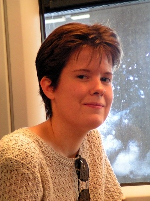

Current SPEX members

Róbert Szabó (PI)
KASC and TESS Working Group leader, K2 RR Lyrae Survey leader, Cepheids, RR Lyrae stars, hydro modeling

László L. Kiss
Mira and semiregular stars, Cepheids, exoplanets, CHEOPS

József M. Benkő
RR Lyrae stars, Cepheids, ground-based follow-up

László Molnár
Gaia, hydro modeling, RR Lyrae stars, Cepheids, space photometry
János Nuspl
Ground-based follow-up, simulations
László Szabados
Gaia, Cepheids

Emese Plachy
Gaia, RR Lyrae stars, Cepheids, chaos, dynamical phenomena
Ádám Sódor
RR Lyrae stars, Blazhko-effect, stellar atmospheres, light curve analysis, hybrid main sequence pulsators, ground-based observations

Zsófia Sódorné Bognár
Asteroseismology of pulsating white dwarf stars, Photometry of variable stars, CCD photometry and data reduction processes, hybrid main sequence pulsators
Vera Dobos
Exoplanets, exomoons, habitability, habitable zones, astrobiology
Attila Bódi
RV Tauri stars, semiregular variables, Kepler/K2 photometry
Áron Juhász
RR Lyrae stars, Gaia, Pann-STARRS, K2 photometry
Students

Ottó Hanyecz
RR Lyrae stars, Kepler/K2, ground-based observations
Dóra Pintér
Kepler pixel project, eclipsing binaries
Collaborators
Zoltán Kolláth
(ELTE, Savaria Campus, Institute of Mathematics and Physics, Hungary)
hydro modeling, RR Lyrae stars, Cepheids, public outreach
Gyula M. Szabó
(Gothard Astrophysical Observatory, Szombathely, Hungary)
Cepheids, Mira and semiregular variables, statistics, exoplanets
Aliz Derekas
(Gothard Astrophysical Observatory, Szombathely, Hungary)
eclipsing binaries, RR Lyrae stars, Cepheids, delta Scuti stars, spectroscopy
Mónika Jurkovic
(Astronomical Observatory of Belgrade, Serbia)
Type II. cepheids
Tamás Borkovits
(Baja Astronomical Observatory, Baja, Hungary)
binary stars, celestial mechanics
Barna I. Bíró
(Baja Astronomical Observatory, Baja, Hungary)
binary stars, eclipse mapping
József Kovács
(Gothard Astrophysical Observatory, Szombathely, Hungary)
spectroscopic analysis
Marek Skarka
(Astronomical Institute, Ondrejov, Czech Republic)
hybrid main sequence pulsators, RR Lyrae stars
Former members
Margit Paparó
white dwarfs, delta Sct stars
Judit Szulágyi
data processing
István Dékány
ground-based follow-up, data reduction
Gábor Fűrész
spectroscopy
Péter Klagyivik
Gaia, space photometry
Gergely Dálya
binaries among main-sequence pulsators
Bálint Seli
Flare stars in Kepler background objects